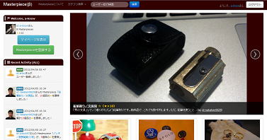
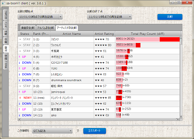
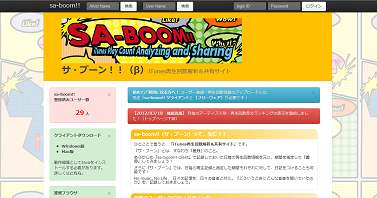
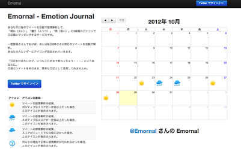
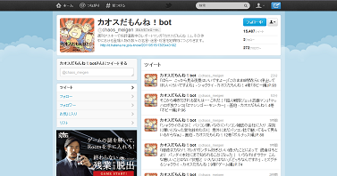
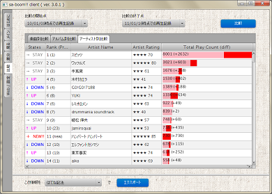
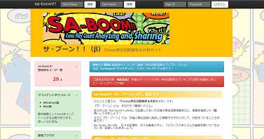
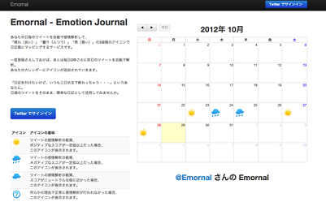
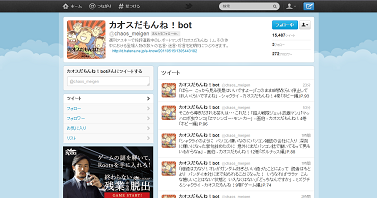

えいのうのいえ - a-know's home
a-knowに関する情報を集めた自己紹介ページ、ポータルページです。
Twitter、ブログ、ソーシャルブックマークなど、私に関する各ページへのリンクをここにまとめています。
さいきんのつぶやき
さいきんのブックマーク

a-knowについて / 自己紹介
a-know（えい-のう）です。いわゆるプログラミングというやつを通じてなにかをつくるのが好きな、三十路の♂です。
つくりたい、と思ったものを自由につくれる、そんなエンジニアになりたいです。（2014/11/29 更新）
| HN | "a-know", "a_know", "えーの"など |
| @a_know | |
| Blog | えいのうにっき - はてなブログ |
| GitHub | GitHub - a-know |
| ask.fm | ask.fm |
| 愛用品 | a-know's Masterpiece |
| 聴いている音楽 | a-know's SA-BOOM!! |
| くうねるすむ | 岡山県岡山市 → 京都府京都市 → 岡山県倉敷市 → 東京都世田谷区 |
| 主な開発言語 | Java, Ruby |
| 業務略歴 |
2006/4 〜 2011/12 鉄鋼大手企業のシステム子会社（SI）に新卒入社。システムエンジニアとして開発業務に従事。実装リーダー、プロジェクトリーダーを担当。人事部を兼任し新卒採用面接を担当していた期間もあり。 2012/1 〜 2012/6 いずれの組織にも所属せず、Web技術などの習得に専念 2012/7 〜 2013/9 CAグループ子会社にて、Webアプリケーションエンジニアとしてモバイル端末向けWebアプリケーションの開発に従事。エンジニアリーダーを担当 2013/10 〜 株式会社フィードフォースの DataFeed Plus 開発チームに所属。開発チームリーダーを担当 |
| 主な技術（カッコ内は経験年数（業務外含む）） |
Java, 6年以上（2007/4 〜 2013/9） COBOL, 2年未満（2006/6 〜 2007/3, 2010/11 〜 2011/12） Ruby, 1年以上（on Rails）（2013/10 〜 ） Go, 半年未満（2014/10 〜 ） JavaScript（jQuery）, 3年以上（2011/9 〜） RDB（Orcacle）, 4年以上（2007/4 〜 2011/12） KVS（Datastore）, 4年以上（2009/7 〜 2013/9） Google App Engine（Java）, 4年以上（2009/7 〜 2013/9） Google App Engine（Go）, 半年未満（2014/10 〜 ） Google Cloud Platform（BigQuery, CloudStorage）, 1年未満（2012/12 〜 2013/9） Amazon Web Services（主にEC2, EMR, RDS 等）, 1年未満（2013/11 〜 ） Hadoop（Amazon Elastic MapReduce）, 1年未満（2013/11 〜 2014/8） AngularJS, 約半年（2013/4 〜 2013/9） TDD, 1年以上（2013/10 〜 ） アジャイル・スクラム下でのチーム開発, 1年以上（2013/10 〜 ） |
| 保有資格 |
ソフトウェア開発技術者 情報セキュリティスペシャリスト OCJ-P 「レゴスクラム」修了（blog） |
| 今までにつくったもの | 「つくったもの」を参照下さい。 |
| 得意なスポーツ | バドミントン |
| 趣味 | クルマ（ドライブ）、開発に関する勉強、インテリア雑貨の物色、かばん集め |
| 主な活動 |
第13回中国GTUG勉強会 登壇 クックパッド㈱主催 第3回開発コンテスト24参加 岡山Javaユーザー会勉強会 登壇 Mashup Award #8 参加 クリスマス直前ハッカソン『サンタソン』 優勝 所属会社内勉強会にて発表 株式会社クレオフーガにて講演（発表） 「三茶でもくもく会」主催 所属会社技術ブログ執筆 |
ブログ更新情報 / えいのうにっき - はてなブログ
つくったもの / a-know's works

愛用品紹介系サービス「Masterpiece」
「大事にされているもの」を集められる場所があれば、そこに登録すること・登録されたものを見ることが小さな楽しみになれば、きっと何らかの「いい」影響を、この世の中に加えることができるんじゃないか・・・。そう考え、制作したサービスです。
詳しい作成の動機については、ぜひサービス内「Masterpieceについて」をご覧下さい。
なにげに、「ザ・インタビューズ」にインスパイアされている部分もあったりすると思います。

iTunes再生回数分析ソフト「sa-boom!! client」
iTunesやiPod、iPhoneなどで音楽を聴くことによりカウントされる、再生回数。iTunes上では、再生回数による単純なソートなどを行えるものの、アルバム別やアーティスト別などでのソートや、ある特定期間における再生回数の算出などはサポートされていません。
これを実現するために、当ソフト「sa-boom!! client」を構築しました。
2012年6月、今までのSwingアプリケーションから最新のJavaFX 2.xで再構築を行いました。雑誌への掲載実績もあります。

iTunes再生回数分析・共有サービス「sa-boom!!」
上記「sa-boom!! client」にて取得した再生回数情報をアップロード、他ユーザーと共有できるWebサービスです。
当サービス上でも期間差分・順位比較を行った上でのランキング表示を行うことができますが、「再生回数情報の共有」「sa-boom!!利用ユーザー全体での再生トレンドを楽しむ」といった、SNS的要素に主眼を置いています。

ツイート内容感情解析サービス「Emornal」
あなたの日毎のTwitterでのツイートを自動で感情解析して、
「晴れ（良い）」「曇り（ふつう）」「雨（悪い）」の3段階のアイコンで
日記風にマッピングするサービスです。
一度登録さえしておけば、あとは毎日0時ごろに前日のツイートを自動で解析。
あなたのカレンダーにアイコンが追加されていきます。
「日記を付けたいけど、いつも三日坊主で終わっちゃう・・・」というあなたに。
ライフログの第1歩として、日頃のTwitterでのツイートをそのまま、簡単な日記として活用してみませんか。
（Mashup Award #8 応募作品）

週刊アスキー連載「カオスだもんね！」Twitter bot
「週刊アスキー」内で好評連載中のレポート漫画、「カオスだもんね！」（現在は「カオスだもんね！ＰＬＵＳ」に改題）。著者（通称「画伯」）の口からまろびでる痛快なコトバ・名言（迷言？）は、Twitter botとするにうってつけの破壊力だと思い、作成しました。
趣味の領域で作っていたものでしたが、いつの間にかカオスチームの目に留まり、なんと！週刊アスキーの本誌連載内でも紹介されました！
Twitterアカウント「@chaos_meigen」をフォローするだけで、いつでも画伯の名言・迷言があなたのタイムラインに。どうぞ、お試し下さい。
愛用品紹介系サービス「Masterpiece」
「大事にされているもの」を集められる場所があれば、そこに登録すること・登録されたものを見ることが小さな楽しみになれば、きっと何らかの「いい」影響を、この世の中に加えることができるんじゃないか・・・。そう考え、制作したサービスです。
詳しい作成の動機については、ぜひサービス内「Masterpieceについて」をご覧下さい。
なにげに、「ザ・インタビューズ」にインスパイアされている部分もあったりすると思います。
| 開発言語 | Java, JavaScript |
| 主な活用技術 | Google App Engine / bootstrap / jQuery |
| 開発時期 | 2012/03 |

iTunes再生回数分析ソフト「sa-boom!! client」
iTunesやiPod、iPhoneなどで音楽を聴くことによりカウントされる、再生回数。iTunes上では、再生回数による単純なソートなどを行えるものの、アルバム別やアーティスト別などでのソートや、ある特定期間における再生回数の算出などはサポートされていません。
これを実現するために、当ソフト「sa-boom!! client」を構築しました。
2012年6月、今までのSwingアプリケーションから最新のJavaFX 2.xで再構築を行いました。雑誌への掲載実績もあります。
| 開発言語 | Java |
| 主な活用技術 | JavaFX 2.x(前バージョン：Swing) / Google App Engineとの連携 |
| 開発時期 | 2008/08 - 2009/03（前バージョン） 2012/05（JavaFX 2.x版） |

iTunes再生回数分析・共有サービス「sa-boom!!」
上記「sa-boom!! client」にて取得した再生回数情報をアップロード、他ユーザーと共有できるWebサービスです。
当サービス上でも期間差分・順位比較を行った上でのランキング表示を行うことができますが、「再生回数情報の共有」「sa-boom!!利用ユーザー全体での再生トレンドを楽しむ」といった、SNS的要素に主眼を置いています。
| 開発言語 | Java |
| 主な活用技術 | Google App Engine / Swingとの連携 / jQuery / jqPlot / bootstrap |
| 開発時期 | 2012/1 - 2012/02 |

ツイート内容感情解析サービス「Emornal」
あなたの日毎のTwitterでのツイートを自動で感情解析して、
「晴れ（良い）」「曇り（ふつう）」「雨（悪い）」の3段階のアイコンで
日記風にマッピングするサービスです。
一度登録さえしておけば、あとは毎日0時ごろに前日のツイートを自動で解析。
あなたのカレンダーにアイコンが追加されていきます。
「日記を付けたいけど、いつも三日坊主で終わっちゃう・・・」というあなたに。
ライフログの第1歩として、日頃のTwitterでのツイートをそのまま、簡単な日記として活用してみませんか。
（Mashup Award #8 応募作品）
| 開発言語 | Java |
| 主な活用技術 | Google App Engine / Twitter4J / Bootstrap / 感情解析API |
| 開発時期 | 2012/10 |

週刊アスキー連載「カオスだもんね！」Twitter bot
「週刊アスキー」内で好評連載中のレポート漫画、「カオスだもんね！」（現在は「カオスだもんね！ＰＬＵＳ」に改題）。著者（通称「画伯」）の口からまろびでる痛快なコトバ・名言（迷言？）は、Twitter botとするにうってつけの破壊力だと思い、作成しました。
趣味の領域で作っていたものでしたが、いつの間にかカオスチームの目に留まり、なんと！週刊アスキーの本誌連載内でも紹介されました！
Twitterアカウント「@chaos_meigen」をフォローするだけで、いつでも画伯の名言・迷言があなたのタイムラインに。どうぞ、お試し下さい。
| 開発言語 | Java |
| 主な活用技術 | Google App Engine / Twitter4J |
| 開発時期 | 2011/05 |
さいきんの写真
さいきんのチェックイン